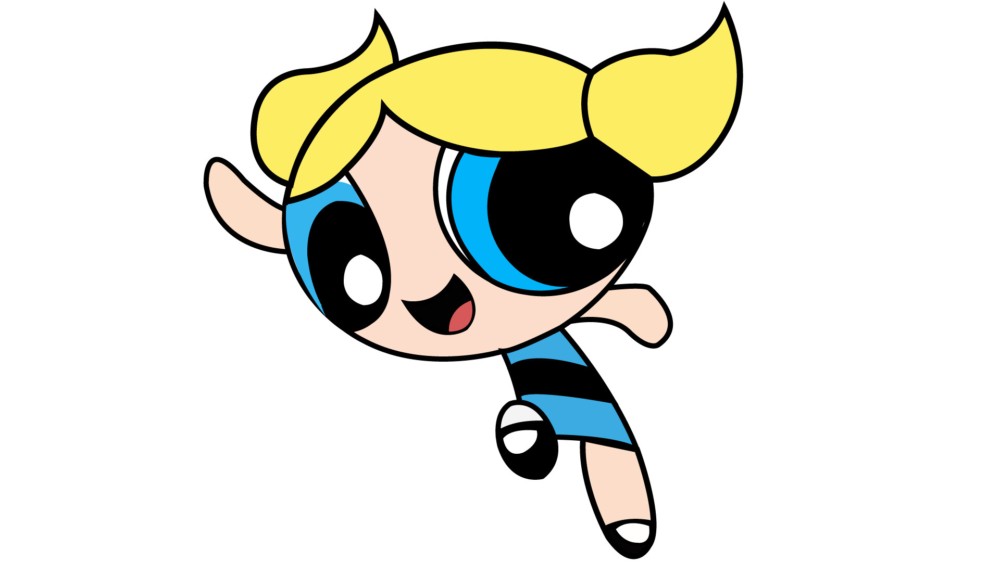

As meninas super poderosas
Conheça as 3 meninas incríveis!!!

Docinho é uma personagem com força, velocidade e agilidade sobre-humanas, além de habilidades de luta avançadas. Ela também tem a capacidade
de se curar rapidamente e resistir a danos físicos extremos. Além disso,
ela é durona, enérgica e impulsiva, o que a torna divertida, mas também pode causar problemas.

Florzinha,, representa as qualidades da sensibilidade, liderança e sabedoria. Ela é inteligente,
corajosa e determinada, e suas habilidades incluem voar e lançar raios laser com os olhos. Além disso,
ela possui um forte senso de justiça e frequentemente luta por causas sociais durante as aventuras.

Lindinha,é considerada ingênua e sensível, mas também é muitas vezes irresponsável e teimosa.
Muitos inimigos consideram ela o ponto fraco da equipe.Lindinha pode se transformar em um grande tornado azul,
diferenciado do utilizado pelas outras meninas. Ela também usa um grito sônico.Além de poder falas diversas linguas,
Lindinha pode se comunicar com os animais.

As Super Poderosas é um desenho animado que conta a história de três garotas com super poderes:
Florzinha, Lindinha e Docinho. Elas foram criadas pelo Professor Utônio, que acidentalmente deixou derrubar
o Elemento X na poção da "Garotinha Perfeita" (uma mistura de açúcar, tempero e tudo o que há de bom)